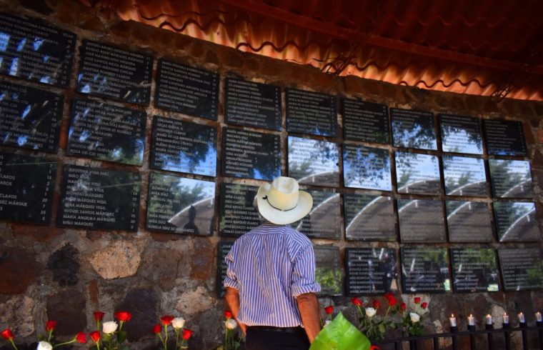
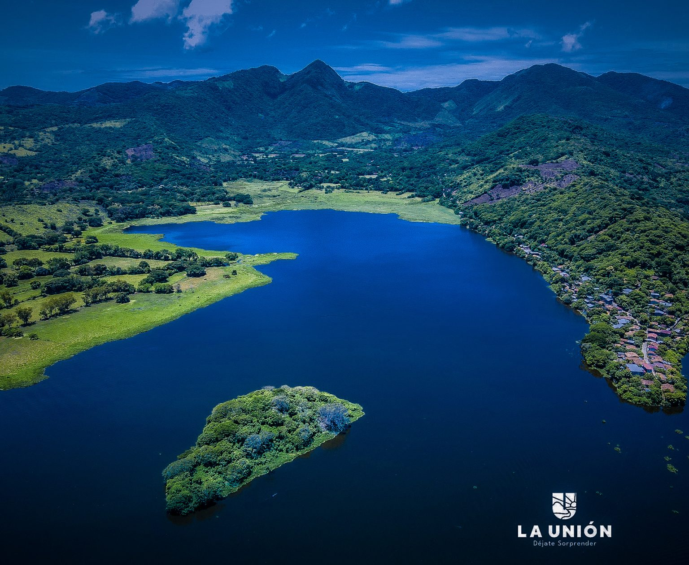
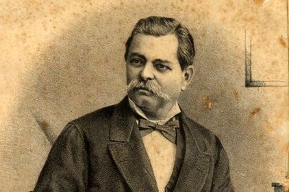

MAPA DE CABAÑAS

Información
Cabañas es un departamento ubicado en la región central de El Salvador, en la zona occidental del país. Limita al norte con los departamentos de Chalatenango y Santa Ana, al este con La Libertad, al sur con la costa del océano Pacífico y al oeste con Ahuachapán.

Datos Históricos
Masacre de Cabañas En 1981, como parte de la guerra civil, se produjo una masacre en Cinquera, un municipio de Cabañas, donde fuerzas militares atacaron a civiles, acusándolos de simpatizar con los guerrilleros. Esta masacre es un recordatorio de la violencia sufrida por las comunidades rurales durante el conflicto armado.
Lista de Municipios
- Sensuntepeque
- Ilobasco
- Cinquera
- Concepción de Ataco
- Dolores
- Guacotecti
- Jutiapa
- Limeira
- Tejutepeque
- Victoria
- San Isidro
- San Miguel de Mercedes
- Santa Clara
Centros Turísticos
Arqueológico de Joya de Cerén Aunque no está completamente en Cabañas, esta zona arqueológica se encuentra en las cercanías del departamento y es conocida como la "Pompeya de América". Es un sitio declarado Patrimonio de la Humanidad por la UNESCO y ofrece una visión sobre las antiguas civilizaciones mayas en la región.

Lagos
La Laguna de Olomega es un importante destino de ecoturismo. Es conocida por su belleza natural y es ideal para actividades como paseos en bote y observación de aves.
Ríos
Cascada de Los Tercios En el municipio de Ilobasco, se encuentra esta impresionante cascada. Es un lugar perfecto para los amantes de la naturaleza y la fotografía, debido a sus paisajes espectaculares.

Volcanes
Cerro La Cruz Situado en la zona de Ilobasco, es un sitio emblemático que ofrece un mirador natural desde donde se puede apreciar la belleza del municipio y sus alrededores.

Personajes Célebres
Juan José Cañas (1793-1863) Nació en el municipio de Sensuntepeque, Cabañas. Fue un destacado político y abogado que jugó un papel importante en los primeros años de la independencia de El Salvador. Se le recuerda por su participación en la defensa de la soberanía del país frente a las amenazas externas e internas, y por su contribución al desarrollo legal y social de El Salvador.
